首届“中国影视歌曲歌手大赛”启动仪式暨新闻发布会
发布时间：2015-04-29
2015年4月29日，首届“中国影视歌曲歌手大赛”启动仪式暨新闻发布会在北京隆重召开，诸多中国电影界、音乐界领导，新闻媒体界代表以及演艺界导演、明星等嘉宾出席。
中国电影家协会党组副书记、大赛组委会名誉主席许柏林；中国台港电影研究会会长、大赛组委会名誉主席张思涛；国家一级演员、著名女高音歌唱家、大赛组委会名誉主席邓玉华；中国微电影大典组委会常务副主任委员、大赛组委会副主席刘冀鹏；新华社手机电视台台长、大赛组委会顾问委员李勤；原国家电影局局长、大赛组委会顾问委员滕进贤；原中国文联副主席、国家一级导演、大赛组委会顾问委员丁荫楠；原中国儿童电影制片厂厂长、中影集团党委书记、大赛组委会顾问委员窦春起；国家电影审查委员会委员、大赛组委会顾问委员高尔纯；大赛组委会主席姜国顺；执行主席高洁；香港导演、大赛组委会顾问委员鞠觉亮；早期电影童星、民族舞蹈家、大赛组委会艺术顾问欧阳莉莉；大赛组委会秘书长乌兰托娅、于珈、郝文翔；执行秘书长张岩、刘焕喜；法国巴黎中国电影节主席、大赛组委会顾问委员高醇芳；美国群英会主席JackyJiang等赛事组委会成员及特邀嘉宾出席了本次会议。
中国电影家协会党组副书记、大赛组委会名誉主席许柏林、邓玉华；组委会顾问委员窦春起；大赛组委会主席姜国顺等在会上发表了重要讲话。启动仪式之后，“中国影视歌曲歌手大赛”赛事活动将陆续在全国各地开展。
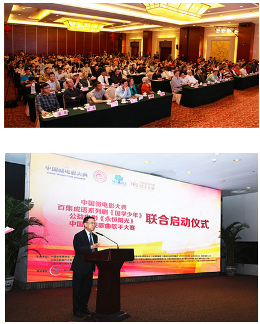
中国电影家协会党组副书记 大赛组织委员会委员 许柏林
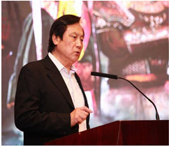
原中影集团党委书记 国家电影审查委员会委员
大赛组织委员会顾问委员 窦春起
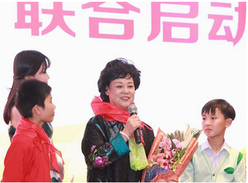
国家一级演员 著名女高音歌唱家
大赛组织委员会名誉主席 邓玉华
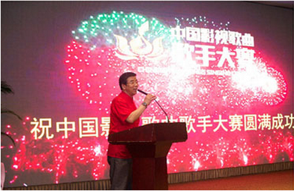
大赛组织委员会主席 姜国顺
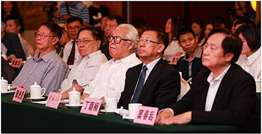
左一：国家电影审查委员会委员 审片组组长 高尔纯
左二：中国台港电影研究会会长 张思涛
左三：原国家广电总局电影局局长 滕进贤
左四：中国电影家协会党组副书记 许柏林
左五：原中影集团党委书记、国家电影审查委员会委员 窦春起
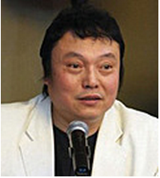
中国电影集团精神文明委员会 副主任
大赛组织委员会名誉主席 王迎庆
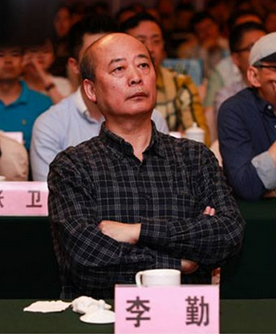
新华社手机电视台台长
大赛组织委员会顾问委员 李勤
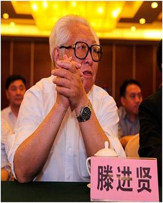
原国家广电总局电影局局长
大赛组织委员会顾问委员 滕进贤

原中国文联副主席 国家一级导演
大赛组织委员会顾问委员 丁萌楠
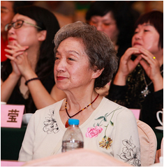
著名民族舞蹈家 大赛组织委员会艺术顾问 欧阳莉莉
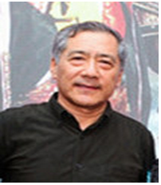
大赛组织委员会秘书长 郝文翔
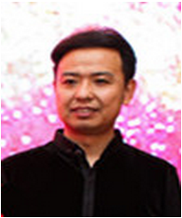
大赛组织委员会执行秘书长 刘焕喜
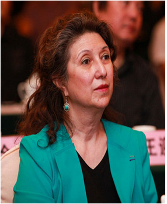
法国巴黎中国电影节主席
大赛组织委员会顾问委员 高醇芳
上一篇：影视歌曲唱的是你我，爱的是家国!
下一篇：无